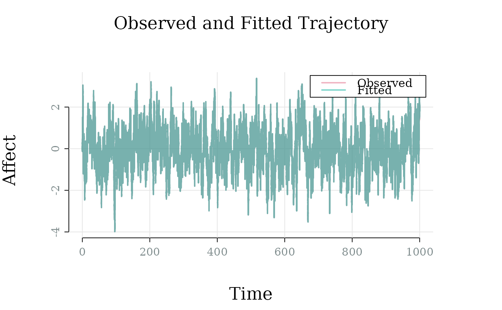

Estimates OU parameters using the exact discrete-time transition density via maximum likelihood. Currently limited to univariate (1D) models.
Usage
# S3 method for class 'affectOU'
fit(object, data, times = NULL, method = "mle", start = NULL, ...)Arguments
- object
An object of class
affectOU.- data
Numeric vector of observed affect values.
- times
Numeric vector of observation times. If
NULL, defaults to equally spaced times: 0, 1, 2, …- method
Character string specifying estimation method. Currently only
"mle"(i.e., maximum likelihood estimation) is supported.- start
Optional named vector of starting values for parameters:
theta,mu, andgamma. IfNULL, reasonable defaults are chosen based on the data. Specifically,thetais initialized using the empirical lag-1 autocorrelation,muis initialized to the sample mean, andgammais initialized based on the stationary variance estimate.- ...
Additional arguments (unused)
Value
An object of class fit_affectOU, containing:
- parameters
Named list of fitted parameter estimates.
- se
Named list of standard errors for parameters.
- fitted_values
Conditional means under the fitted model.
- residuals
Vector of residuals (
data - fitted_values).- log_likelihood
Maximized log-likelihood value.
- rmse
Root Mean Squared Error of the fitted values.
- convergence
Optimizer convergence code.
- start
List of starting values used by the optimizer.
- nobs
Number of observations.
- data
The observed data used for fitting.
- times
The observation times used.
- method
Estimation method used (e.g.,
"mle").- model
The original
affectOUmodel used for fitting.
Examples
model <- affectOU(theta = 0.5, mu = 0, gamma = 1)
sim <- simulate(model, stop = 1000, dt = 0.01, save_at = 0.01)
data <- as.data.frame(sim)
fitted <- fit(model, data = data$value, times = data$time)
print(fitted)
#>
#> ── Fitted 1D Ornstein-Uhlenbeck Model ──────────────────────────────────────────
#> 100001 data points (dt ≈ 0.010)
#> θ = 0.000, μ = 0.012, γ = 1.003
#> Log-likelihood: 88039.614
#> RMSE: 0.100
plot(fitted)
